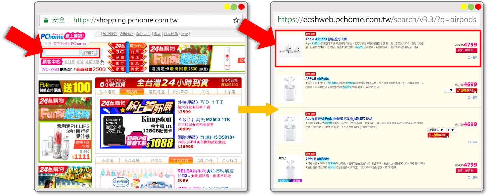
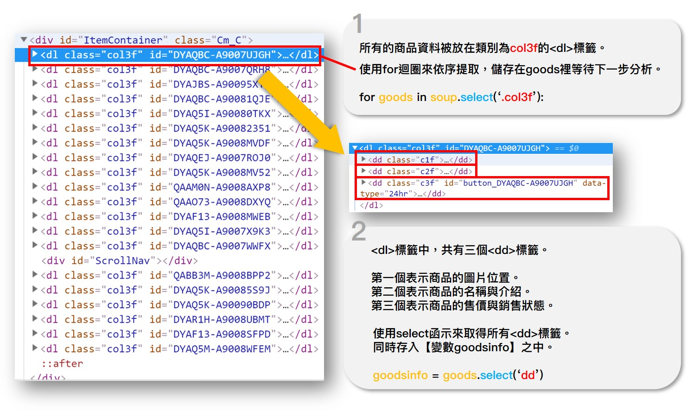

PChome線上購物
我們以實戰的例子教大家如何使用Selenium。
請大家連上Pchome線上購物，並在左上角的搜尋框中輸入airpods。
Pchome會回傳資料庫中所有符合相關名稱的商品資料，並以表格會的方式呈現。
(看到規律的排列，就知道可以爬蟲了)

🗒️使用requests來請求
import requests
webContent = requests.get('https://ecshweb.pchome.com.tw/search/v3.3/?q=airpods')
webContent.encoding = 'UTF -8'
print(webContent.text)
在取得的HTML文件中，雖然依然看得出架構，但完全不包含任何的產品資訊。
這是因為這裡所顯示的頁面是由JavaScript搭配資料庫動態產生的。
意思就是，商品資訊由供應商上傳到後台的資料庫中，當PChome的網頁有使用者連線查詢時，會及時到資料庫查詢並將查到的資料安插到HTML文件中適當的位置裡。
這樣一來，工程師們就不用手刻每個商品的HTML文件，網頁也能自動隨著後台資料庫的更新(價格、剩餘商品數)而有所不同。
(試想面對成千上萬的商品，每一個都要生產出一個介面是多累人的事)
🗒️使用Selenium來請求
如果我們沒有透過真正的瀏覽器載入頁面，HTML文件中的JavaScript就無法執行，也就代表不會從資料庫中抓取資料，自然就是個空殼HTML文件。
我們將一步一步帶大家使用Selenium來請求HTML文件，並使用BeautifulSoup來分析資料。
創建python檔
打開sublime3， Ctrl + N 開啟一個新檔案， 緊接著Ctrl + S存檔， 將檔案命名為
selenium-1.py， 並 且將儲存目的地選在"桌面"。(方便待會兒操作)
匯入所需模組
和所有模組一樣，首先使用import將beautifulsoup4匯入程式之中：
這裡要注意，beautifulsoup的名稱是bs4，我們要從bs4中再匯入BeautifulSoup函式，所以寫法略有不同：from bs4 import BeautifulSoup接著，從selenium模組，匯入webdriver函式：
from selenium import webdriver
建立Selenium物件
建立一個webdriver物件，貼上browser標籤(變數名稱)、並使用它來控制瀏覽器，需要說明Chrome Driver(剛剛下載的驅動)在電腦中的位置。
描述位置時，請改用正斜線。
到這裡執行一下，會發現程式會自動開啟一個空白的瀏覽器頁面。browser = webdriver.Chrome('在電腦中的位置')
取得文件
我們的目標是PChome線上購物：https://ecshweb.pchome.com.tw/search/v3.3/?q=airpods
使用webdriver物件的get方法，取得網頁回應。
browser.get('https://ecshweb.pchome.com.tw/search/v3.3/?q=airpods')和requests不同的是，我們這次是真正的打開瀏覽器來瀏覽，而不單單只是請求回應而已。
使用BeautifulSoup分析
把webdriver物件的【屬性page_source】當作參數傳入BeautifulSoup中，後面的html.parser為解析方式。
將BeautifulSoup()函式回傳的資料存入soup之中，其類別為BeautifulSoup。
soup = BeautifulSoup(browser.page_source, "html.parser")

關閉瀏覽器
取得所需資訊後，記得在最後使用方法quit()關閉瀏覽器，避免佔用太多資源。
browser.quit()
👨💻課堂練習
請仔細觀察PChome的請求網址來完成這一系列挑戰：https://ecshweb.pchome.com.tw/search/v3.3/?q=airpods
1️⃣讓使用者輸入自己想要查詢的商品，程式要回傳商品的名稱和售價。
輸入
請輸入較查詢的產品：airpods
輸出
Apple AirPods 原廠藍牙耳機AirPods 售價： 4799 元
APPLE AirPodsAirPods 售價： 4699 元
Apple原廠AirPods 無線藍牙耳機_MMEF2TA/AAirPods 售價： 4699 元
APPLE AirPodsAirPods 售價： 4799 元
Baseus AirPods Apple藍牙耳機 磁吸防丟掛繩/防丟線AirPods 售價： 329 元
AirPods Apple藍牙耳機盒保護套AirPods 售價： 229 元
Apple AirPods 無線藍牙耳機AirPods 售價： 4799 元
AHAStyle PodFit 2.0 - AirPods專用矽膠保護套 新版掛鉤AirPods 售價： 380 元
AHAStyle PodFit - AirPods專用矽膠保護套AirPods 售價： 290 元
Apple AirPods 原廠無線藍芽耳機AirPods 售價： 5490 元
Apple AirPods 原廠藍牙耳機AirPods 售價： 4999 元
AHAStyle 三合一充電底座 AirPods / iPhone / Apple watchAirPods 售價： 520 元
AirPods Apple藍牙耳機運動防丟掛繩/防丟線AirPods 售價： 249 元
APPLE AirPods 無線藍芽耳機[公司貨]AirPods 售價： 4890 元
Apple AirPods 無線耳機AirPods 售價： 5490 元
Q彈輕薄 AirPods Apple 藍芽耳機防刮保護套 (內附藍芽耳機掛繩) 藍色AirPods 售價： 390 元
Q彈輕薄磁吸式防丟繩繞線設計 AirPods Apple 藍芽耳機防刮保護套 黑色AirPods 售價： 390 元
AhaStyle AirPods/EarPods 耳掛 Apple耳機專用 防丟防滑耳機套AirPods 售價： 180 元
Apple iPhone, Airpods, Apple watch 3合1支架Airpods 售價： 950 元
AHAStyle Airpods專用矽膠防丟繩Airpods 售價： 80 元
2️⃣讓使用者輸入自己想要查詢的商品，程式要回傳商品的名稱和售價，並且有貨要優先顯示，同時必須是24小時到貨的商品。
輸入
請輸入較查詢的產品：airpods
輸出
APPLE AirPodsAirPods 售價： 4699 元
Apple原廠AirPods 無線藍牙耳機_MMEF2TA/AAirPods 售價： 4699 元
Baseus AirPods Apple藍牙耳機 磁吸防丟掛繩/防丟線AirPods 售價： 329 元
AirPods Apple藍牙耳機盒保護套AirPods 售價： 229 元
AHAStyle PodFit 2.0 - AirPods專用矽膠保護套 新版掛鉤AirPods 售價： 380 元
Apple AirPods 無線藍牙耳機AirPods 售價： 4799 元
AHAStyle PodFit - AirPods專用矽膠保護套AirPods 售價： 290 元
AirPods Apple藍牙耳機運動防丟掛繩/防丟線AirPods 售價： 249 元
Apple AirPods 無線耳機AirPods 售價： 5490 元
Q彈輕薄 AirPods Apple 藍芽耳機防刮保護套 (內附藍芽耳機掛繩) 藍色AirPods 售價： 390 元
AhaStyle AirPods/EarPods 耳掛 Apple耳機專用 防丟防滑耳機套AirPods 售價： 180 元
Apple iPhone, Airpods, Apple watch 3合1支架Airpods 售價： 950 元
AHAStyle Airpods專用矽膠防丟繩Airpods 售價： 80 元
APPLE AirPodsAirPods 售價： 4799 元
掛勾式 Apple AirPods藍牙耳機盒保護套AirPods 售價： 273 元
catalyst Apple AirPods 保護收納盒-夜光綠AirPods 售價： 1080 元
AHAStyle AirPods 三合一旅行收納包AirPods 售價： 460 元
AHAStyle PodGo - AirPods 專用半包式保護套AirPods 售價： 209 元
復古皮革 AirPods Apple 藍牙耳機防刮保護套 瘋馬紋AirPods 售價： 990 元
【為AirPods專屬】AirPods Apple藍牙耳機防刮保護套 海軍藍AirPods 售價： 225 元